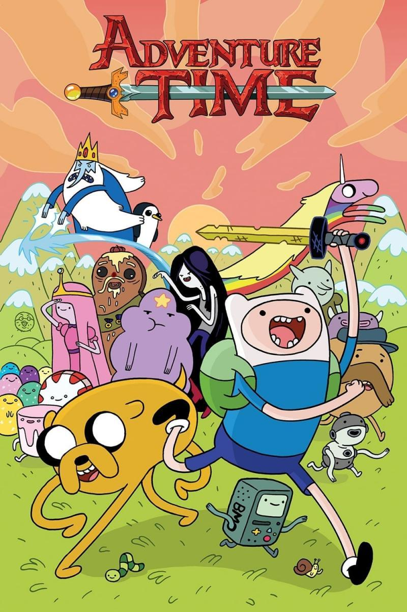

Hora de Aventura
Hora de Aventura presenta a los héroes Finn y Jake, dos amigos que atraviesan la mística Tierra de Ooo, donde se encuentran con sus coloridos habitantes.
Protagonizado por: Jeremy Shada, John DiMaggio, Hynden Walch
¿Listo para vivir una aventura extrema? Únete a los mejores amigos Finn, el niño humano y Jake, el perro sabio en la tierra de Ooo para la Hora de Aventura. Esta serie sigue a Finn y Jake mientras se embarcan en una serie de diversión y aventuras únicas!